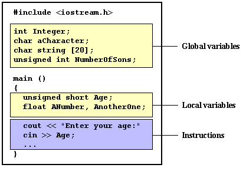

C++ 变量
你可能觉得这个“Hellow World”程序用处不大。我们写了好几行代码，编译，然后执行生成的程序只是为了在屏幕上看到一句话。的确，我们直接在屏幕上打出这句话会更快。但是编程并不仅限于在屏幕上打出文字这么简单的工作。为了能够进一步写出可以执行更有用的任务的程序，我们需要引入变量（variable）这个的概念。
让我们设想这样一个例子，我要求你在脑子里记住5这个数字，然后再记住2这个数字。你已经存储了两个数值在你的记忆里。现在我要求你在我说的第一个数值上加1，你应该保留6 （即5+1）和2在你的记忆里。现在如果我们将两数相减可以得到结果4。
所有这些你在脑子里做的事情与计算机用两个变量可以做的事情非常相似。同样的处理过程用C++来表示可以写成下面一段代码：
a = 5; b = 2; a = a + 1; result = a - b;
很明显这是一个很简单的例子，因为我们只用了两个小的整数数值。但是想一想你的电脑可以同时存储成千上万这样的数值，并进行复杂的数学运算。
因此，我们可以将变量（variable）定义为内存的一部分，用以存储一个确定的值。
每一个变量 (variable)需要一个标识，以便将它与其他变量相区别，例如，在前面的代码中，变量标识是a, b, 和result。我们可以给变量起任何名字，只要它们是有效的标识符。
标识（Identifiers）
有效标识由字母(letter)，数字(digits)和下划线 ( _ )组成。标识的长度没有限制，但是有些编译器只取前32个字符（剩下的字符会被忽略）。
空格(spaces)，标点(punctuation marks)和符号(symbols) 都不可以出现在标识中。 只有字母(letters)，数字(digits) 和下划线(_)是合法的。并且变量标识必须以字母开头。标识也可能以下划线（_）开头，但这种标识通常是保留给为外部连接用的。标识不可以以数字开头。
必须注意的另一条规则是当你给变量起名字时不可以和C++语言的关键字或你所使用的编译器的特殊关键字同名，因为这样与这些关键字产生混淆。例如，以下列出标准保留关键字，他们不允许被用作变量标识名称：
asm, auto, bool, break, case, catch, char, class, const, const_cast, continue, default, delete, do, double, dynamic_cast, else, enum, explicit, extern, false, float, for, friend, goto, if, inline, int, long, mutable, namespace, new, operator, private, protected, public, register, reinterpret_cast, return, short, signed, sizeof, static, static_cast, struct, switch, template, this, throw, true, try, typedef, typeid, typename, union, unsigned, using, virtual, void, volatile, wchar_t, while
另外，不要使用一些操作符的替代表示作为变量标识，因为在某些环境中它们可能被用作保留词：
and, and_eq, bitand, bitor, compl, not, not_eq, or, or_eq, xor, xor_eq
你的编译器还可能包含一些特殊保留词，例如许多生成16位码的编译器（比如一些DOS编译器）把 far, huge和 near也作为关键字。
非常重要：C++语言是“ 大小写敏感”(“case sensitive”) 的，即同样的名字字母大小写不同代表不同的变量标识。因此，例如变量RESULT，变量result和变量Result分别表示三个不同的变量标识。
基本数据类型（Fundamental Data types）
编程时我们将变量存储在计算机的内存中，但是计算机要知道我们要用这些变量存储什么样的值，因为一个简单的数值，一个字符，或一个巨大的数值在内存所占用的空间是不一样的。
计算机的内存是以字节(byte)为单位组织的。一个字节（byte）是我们在C++中能够操作的最小的内存单位。一个字节(byte)可以存储相对较小数据：一个单个的字符或一个小整数（通常为一个0到255之间的整数）。但是计算机可以同时操作处理由多个字节组成复杂数据类型，比如长整数(long integers)和小数（decimals）。以下列表总结了现有的C++基本数据类型，以及每一类型所能存储的数据范围：
数据类型（DATA TYPES）
| 名称 | 字节数* | 描述 | 范围* |
|---|---|---|---|
| char | 1 | 字符（character）或整数（integer ）， 8位（bits）长 | 有符号（signed）: -128 到 127 无符号（unsigned）: 0 到 255 |
| short int (short) |
2 | 短整数（integer ）16位（bits）长 | 有符号（signed）: -32768 到 32767 无符号（unsigned）: 0 到 65535 |
| long int (long) |
4 | 长整数（integer ）32位（bits）长 | 有符号（signed）:-2147483648 到 2147483647 无符号（unsigned）: 0 到 4294967295 |
| int | 4 | 整数（integer） | 有符号(signed): -2147483648 到 2147483647 无符号（unsigned): 0 到 4294967295 |
| float | 4 | 浮点数（floating point number） | 3.4e + / - 38 （7 个数字（7digits）） |
| double | 8 | 双精度浮点数（double precision floating point number） | 1.7e + / - 308 (15 digits) |
| long double | 8 | 长双精度浮点数（long double precision floating point number） | 1.7e + / - 308 (15 digits) |
| bool | 1 | 布尔Boolean值。它只能是真(true)或假(false)两值之一。 | true 或 false |
| wchar_t | 2 | 宽字符(Wide character) 。这是为存储两字节(2 bytes) 长的国际字符而设计的类型。 | 一个宽字符（1 wide characters） |
* 字节数一列和范围一列可能根据程序编译和运行的系统不同而有所不同。这里列出的数值是多数32位系统的常用数据。对于其他系统，通常的说法是整型(int)具有根据系统结构建议的自然长度（即一个字one word的长度），而4中整型数据char, short, int, long的长度必须是递增的，也就是说按顺序每一类型必须大于等于其前面一个类型的长度。同样的规则也适用于浮点数类型float, double和 long double，也是按递增顺序。
除以上列出的基本数据类型外，还有指针（pointer）和void 参数表示类型，我们将在后面看到。
变量的声明（Declaration of variables）
在C++中要使用一个变量必须先声明（declare）该变量的数据类型。声明一个新变量的语法是写出数据类型标识符（例如int, short, float...) 后面跟一个有效的变量标识名称。例如：
int a; float mynumber;
以上两个均为有效的变量声明（variable declaration）。第一个声明一个标识为a 的整型变量(int variable)，第二个声明一个标识为mynumber 的浮点型变量(float variable)。声明之后，我们就可以在后面的程序中使用变量a和 mynumber 了。
如果你需要声明多个同一类型的变量，你可以将它们缩写在同一行声明中，在标识之间用逗号(comma) 分隔。例如：
int a, b, c;
以上语句同时定义了a、b、c 3个整型变量，它与下面的写法完全等同：
int a; int b; int c;
整型数据类型 (char, short, long 和 int) 可以是有符号的（signed）或无符号的（unsigned ），这取决于我们需要表示的数据范围。有符号类型(signed)可以表示正数和负数，而无符号类型(unsigned)只能表示正数和0。在定义一个整型数据变量时可以在数据类型前面加关键字 signed 或 unsigned 来声明数据的符号类型。例如：
unsigned short NumberOfSons; signed int MyAccountBalance;
如果我们没有特别写出signed或 unsigned，变量默认为signed，因此以上第二个声明我们也可以写成：
int MyAccountBalance;
因为以上两种表示方式意义完全一样，因此我们在源程序通常省略关键字signed 。
唯一的例外是字符型（char）变量，这种变量独立存在，与signed char 和 unsigned char型均不相同。
short 和 long 可以被单独用来表示整型基本数据类型，short 相当于 short int， long 相当于 long int。也就是说 short year; 和 short int year; 两种声明是等价的。
最后，signed 和 unsigned 也可以被单独用来表示简单类型，意思分别同signed int 和 unsigned int 相同，即以下两种声明互相等同：
unsigned MyBirthYear; unsigned int MyBirthYear;
下面我们就用C++代码来解决在这一节开头提到的记忆问题，来看一下变量定义是如何在程序中起作用的。
#includeusing namespace std; int main () { // declaring variables: int a, b; int result; // process: a = 5; b = 2; a = a + 1; result = a - b; // print out the result: cout << result; // terminate the program: return 0; }
输出结果：
4
如果以上程序中变量声明部分有你不熟悉的地方，不用担心，我们在后面的章节中很快会学到这些内容。
变量的范围（Scope of variables）
所有我们要使用的变量都必须事先声明过。Ｃ和Ｃ++语言的一个重要区别是，在C++语言中我们可以在源程序中任何地方声明变量，甚至可以在两个可执行(excutable)语句的中间声明变量，而不象在C语言中变量声明只能在程序的开头部分。
然而，我们还是建议在一定程度上遵循C语言的习惯来声明变量，因为将变量声明放在一处对debug程序有好处。因此，传统的C语言方式的变量声明就是把变量声明放在每一个函数(function)的开头（对本地变量local variable）或直接放在程序开头所有函数(function)的外面（对全局变量global variable）。
一个变量可以是本地(local)范围内有效，叫做本地变量，也可以是全局(global)范围内有效，叫做全局变量。全局变量要定义在一个源码文件的主体中，所有函数(包括主函数main()）之外。而本地变量定义在一个函数甚至只是一个语句块单元中。如下图所示：
变量初始化（Initialization of variables）
当一个本地变量( local variable)被声明时，它的值默认为未定(undetermined)。但你可能希望在声明变量的同时赋给它一个具体的值。要想达到这个目的，需要对变量进行初始化。C++中有两种初始化方法：
第一种，又叫做类C (c-like) 方法，是在声明变量的时候加上一个等于号，并在后面跟上想要的数值：
type identifier = initial_value ;
例如，如果我们想声明一个叫做a的int变量并同时赋予它0这个值，我们可以这样写：
int a = 0;
另外一种变量初始化的方法，又叫做构造函数(constructor)初始化， 是将初始值用小括号（parenthesis ()）括起来:
type identifier (initial_value) ;
例如：
int a (0);
在C++.中以上两种方法都正确并且两者等同 。
#includeusing namespace std; int main () { int a=5; // 初始值为 5 int b(2); // 初始值为 2 int result; // 不确定初始值 a = a + 3; result = a - b; cout << result; return 0; }
输出结果：
6